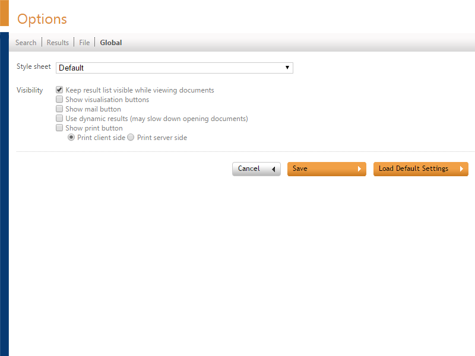

The Global Options page controls the web client style and the visibility of some buttons.

Style sheet
To change the appearance of the web client, choose another Style sheet. The style sheet is applied when you click the Save button.
Visibility
By default, the result list remains visible while viewing documents.
To use the Visualization Module, select the checkbox Show visualization buttons.
To show the mail button, select the checkbox Show mail button.
The Use dynamic results option reloads search results each time a document is selected. This ensures that the latest documents and the field data are always shown. This is useful for indexes that are constantly being updated but you may notice that for large results lists documents open more slowly.
To show the print button, select the checkbox Show print button.
Choose 'Print client side' or 'Print server side'.
Client side printing allows you to add a selection of Document key fields (and their values) and/or Document properties to a page preceding the print output.
For more information, see Print Service for the Web Client (page 150).
The web template style uses a large set of style sheets to control the lay-out and functionality. Style sheets used by this style use the naming convention 'ZFE_name.ccs'. All style sheets except for the ZFE_user.ccs control the coloring and fonts. These style sheets can be activated by the user in the Global (see "Global Options" page 146) tab.
The ZFE_user.css is intended to control the options and buttons on the HTML pages. The ZFE_user.css overwrites all settings in the other style sheets that are used in the HTML pages. The ZFE_user.css will not be updated with new versions of ZyLAB software. By default all options are displayed in the Template Style. In the ZFE_user.css you can remove options by activating the "display:none" tag for each option.
You activate the "display:none" tag by removing the "/ *" and "* /" delimiters.
You can also copy parts of the ZFE_default.css to the ZFE_user.css to make more settings default for the users.